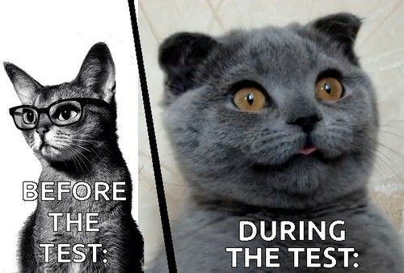
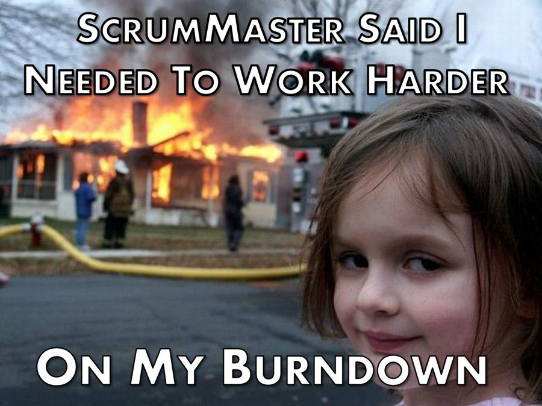
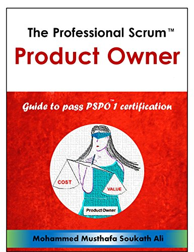

Preparação para o exame Scrum
1. Leia (e releia) o Scrum Guide
Tenha certeza de uma coisa na sua preparação para a prova: você já está lendo (e relendo) o Scrum Guide como se não tivesse mais nada pra fazer na sua vida. A afirmação é meio extrema mesmo, mas é a recomendação da galera que já fez a prova.
Durante seus estudos, muita atenção com fontes complementares. Geralmente, o Scrum Guide é levado à pé da letra nas questões e qualquer teoria do Scrum em si que não esteja no guia poderá ser considerado falso ou inexistente no Scrum.
Que que tem de tão bom em estudar esse Scrum Guide afinal?
Relatos no fórum do Scrum.org garantem que, se você tiver lido o Scrum Guide, você será capaz de obter de 75% a 80% da nota do exame. Por isso, vale muito a pena o investimento nessa leitura, uma vez que o Scrum Guide é bem conciso, não passando de 19 páginas em sua totalidade.
2. Fique a par do glossário oficial
O site do Scrum.org oferece dois glossários que são de grande importância para quem quer passar na prova. O primeiro glossário é de interesse geral, trazendo os principais conceitos do Scrum de forma bem resumida e abrangente.
Já o segundo é voltado para os desenvolvedores que precisarão fazer o PSD com sucesso. Combine seu estudo do Scrum Guide com a revisão dos glossários sempre que possível.
3. Faça as provas abertas do Scrum.org

Essa dica salvou muita gente na hora de passar com mais de 85% no exame real: faça os testes abertos oferecidos pelo Scrum.org todos os dias, até o ponto de você atingir consistência no resultado, tirando 100% umas três ou quatro vezes seguidas.
Onde posso fazer esses testes abertos?
O Scrum.org oferece três provas abertas do seu interesse:
- Professional Scrum Master (para todos)
- Professional Scrum Product Owner (para o P.O.)
- Professional Scrum Developer (para os devs)
Sem essa de deixar pra última hora
Não deixe para fazer estes testes abertos apenas um ou dois dias antes do teste. Eles são sua oportunidade de saber, de antemão, quais são os seus pontos fracos, o que você sabe e já domina, e o que você acertou por mera sorte.
Mas cai na prova real?
Segundo quem já fez a prova, é provável que caiam de 15 a 20 questões dos testes abertos no exame real. Se você já está gabaritando estas questões nos testes abertos, você poderá respondê-las com mais assertividade e rapidez durante o exame real e terá tempo para as questões mais cabeludas.
E o nível de dificuldade?
Um ponto de atenção: os testes abertos não são tãããão difíceis quanto o exame real. Enquanto os testes abertos focam em perguntas rápidas sobre conceitos básicos, 30% a 40% do exame é focado em interpretar o uso do Scrum na prática em cenários realistas.
4. Informações sobre a realização da prova
Cuidado com o passado
Antes de falarmos da prova em si, algo a reforçar: não confie 100% nas suas experiências anteriores com Scrum. Há uma probabilidade no ar de você ter trabalhado com uma versão adaptada do Scrum, que não está alinhada ao Scrum Guide de forma pura.
Pode consultar, minha gente!
Uma notícia boa: a prova é de consulta! Ao contrário de outros emissores de certificação como o ScrumStudy (que exige uma câmera apontada na sua cara durante a prova), no caso do Scrum.org, você tem a liberdade de poder abrir o Google, o Scrum Guide e todas as suas anotações de estudo no momento da prova, mas ainda assim, você tem menos de 1 minuto por questão. É aí que entra o valor de ter gabaritado todos os testes abertos do Scrum.org.
O tempo tá passando
Ganhar tempo é importante, pois muitos já alegaram sofrer com a velocidade de carregamento das páginas do teste. Um relato diz que acabou levando em média 2 minutos para carregar as 5 a 10 primeiras questões. Vá para a prova sabendo que você pode perder alguns minutos preciosos por mero problema da plataforma.
Perguntas difíceis podem esperar
No caso de encontrar perguntas difíceis, você poderá marcá-las para responder depois, ao final da prova. Se você estiver bem preparado pro exame, é capaz que você termine tudo em menos de meia hora.
O poder de interpretar certo
Procure interpretar bem cada palavra da questão, pois a mesma pode se tratar de uma pegadinha. Atenção extra a perguntas que vão lhe questionar se algo é meramente sugerido pelo Scrum ou se algo tem caráter mandatório/obrigatório para ser considerado Scrum.
5. Testes de prática gratuitos
Além dos testes abertos oferecidos pelo Scrum.org, há também testes abertos de terceiros e que não custam um centavo. Mas vale a pena ficar esperto, pois nada vai garantir que estes testes estão fiéis ao estado em que se encontra o banco de questões do Scrum.org hoje.
- Mikhail Lapshin - PSM I
- Mikhail Lapshin - PSPO I
- The Scrum Master - PSM I
- The Scrum Master - PSPO I
- The Scrum Master - PSD I
6. Testes de prática pagos
7. Leitura sugerida
-
A Arte de Fazer o Dobro do Trabalho na Metade do Tempo
-
Preparatório para Exames Scrum: Simulado com 500 questões comentadas + coaching para certificações Scrum
-
Scrum (Casa do Código)
-

Scrum Narrative and PSM Exam Guide
-

The Professional Scrum Product Owner: Guide to Pass PSPO 1 Certification